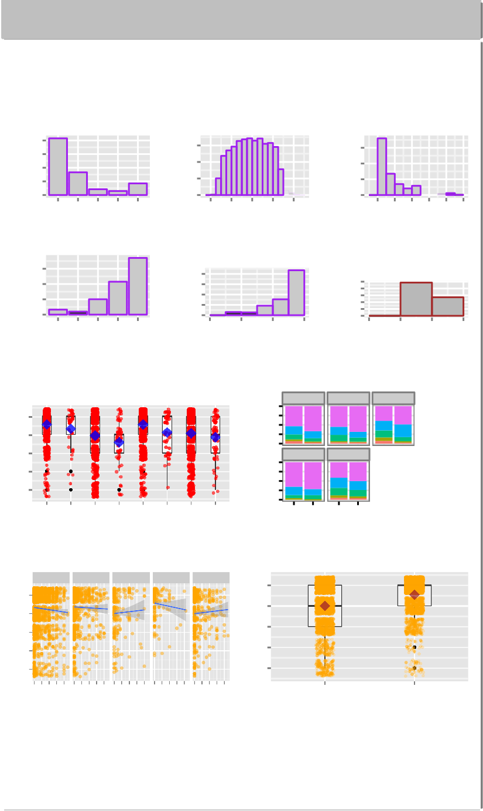

Advanced Data
Analysis I
University of New Mexico Statistics Fall 2015
Thomas Milton Maestas, MA
University of New Mexico, Department of Sociology
� I would like to know if working hours during high school is associated with college expectations. Second, does parental college concern moderate this hypothesized association? [3].
� During preliminary fieldwork, I interviewed two University
“Results indicate an s.s. positive relation between college expectations and parental college concern, b= .31, p< .001. There is negative relation with working hours, b= -.003, p=.036; Parenting does not condition the association of college expectation and working hours. ” H0 : µH P CC = µLP CC
Undergraduate Advisors from two programs–the first served Latino
undergraduates and the other served First-Generation and/or
versus HA : µHP CC
µLP CC
Low-Income undergraduates. I learned about a parental phenomenon that may affect the student’s academic confidence, and hence motivation. The advisors described that some Latino students’ parents, if in low-income bracket, did not fully support college-going in favor of working. Also, the sons would be expected to work, while daughters were expected to go to college. [1, 3]
� I designed this study into categorical terms first: I hypothesize that working hours during adolescence is negatively associated with level of college expectation; and, this relation is conditioned by parental college
2000
count
1500
1000
500
0
Race−Ethnicity Count
WhiteBlackNativeAsianLatino
Parental Coll Concern
300
count
200
100
0
Age
12 14 16 18 20
Expectation
1500
count
1000
500
0
Hours Worked
0 10 20 30 40 50
Wave 4
concern. I further hypothesize that Latino males’ college expectations
decrease is accentuated by low-parental college concern, above and beyond a lower, base-line accentuation on the entire sample population. [2, 1, 4].
1500
count
1000
500
0
1 2 3 4 5
2000
count
1500
1000
500
0
to Attend College
0 2 4 6
Graduated BA College or higher level
1250
count
1000
750
500
250
0
−1 0 1 2
� Are working hours in high school negatively associated with college expectations?
� Secondly, does high parental college concern moderate the relationship
College Expectation 1)Parental College Concern
College Expectation
of Males and Females, by Race
between working hours and college expectations? If so, Do Latino groups have differing expectations?
� Third, do later Wave 4 college graduation outcomes correspond to expections in the hypothesized negative association with hours worked?
1. National Longitudinal Adolescent Health Study, Stratified, cohort 1994-1995 Wave I and 2004/2005 Wave IV; N=3,694 Adolescent
Working Status and Non−Latino/Latino'
Expectation to attend College
5
4
3
2
1
HC,NHWC,NW,LLaCt,NLWC,NW,LaHtC,WHC,W,LaLt C,WLC,W,Lat
Parental College Concern
1.00
0.75
Proportion
0.50
0.25
0.00
1.00
0.75
0.50
0.25
0.00
White Black Native
Asian Latino
M F M F
Gender
1
2
3
4
5
students
linear regression of college expectation on working hours,
−
b = .004p < .05. Parental college concern, b = .31, p < .001. No statististically significant interaction of two DVs; and Welch
two-sample t-test below.
Logistic regression model of hours Worked and probability of later College graduation: -1.07, i.e., 7 percent less likely ...
H1 : Initial Hypotheses Confirmed, except for Latinos: Working hours during high school have negative association with college expectations.
Hours Worked versus college expectation by Race−Ethnicity
White Black Native Asian Latino
College Expectation
5
4
3
2
1
010203040 010203040 010203040 010203040 010203040
Hours Worked
College Expectation
by Parental College Concern
College Expectation
5
4
3
2
1
Low Concern High Concern
Parental College Concern
* Latinos and Native Americans exact opposite–they increase in college expectation when hours increase.
H2 : Fail to reject null: Multiple regression of DV Coll. Expectation regressed on interaction between Parenting college concern and working-in-high-school in the association with
expectation-to-go-to-college.
H3 (Wave 4) : Null rejected: Hypothesis that Wave 4 college graduation outcome variable (probability of BA) is negatively associated with working hours in high school is confirmed by logistic regression.
� ‘Is the population mean college expectation different for those with Parents of High College
Concern(HPC) versus those with low College Concern(LPC)?” * H0 : µHi−P arConcern = µLP C versus HA : µHP C /= µLo−P arConcern Let α = 0.05, t he significance level of the test and the Type-I error probability if the null hypothesis is true. ts = ‘rsignif (t.summary.Exstatistic, 4)‘.p=‘r signif(t.summary.Exp.value, 3)‘, this is the observed significance of the test. Because
p = ‘rsignif (t.summary.Exp.value, 3)‘ <0.05
“Do Working Hours in adolescence associate with probability of graduating College?”
Observed and predicted Graduation, logit scale
� The results indicate statistically significant relationships between college expectations of working adolescents and parental college concern. The new frontier will be to compare peer network associations with parental associations.
Stephanie A. Bohon, Monica Kirkpatrick Johnson, and Bridget K. Gorman. College Aspirations and Expectations among Latino Adolescents in the United States. Social Problems, 53(2):207–225, 2006.
Pamela E. Davis-Kean. The Influence of Parent Education and Family Income on Child Achievement: The Indirect Role of Parental Expectations and the Home Environment. Journal of Family Psychology, 19(2):294–304, 2005.
Frank F Furstenberg. The Sociology of Adolescence and Youth in the 1990s: A Critical Commentary. Journal of Marriage and Family,
1
emp.logit
0
−1
−2
0 10 20 30 40
HoursWorked
50
100
150
200
62(4):896–910, 2000.
Stephen L. Morgan. Trends in Black-White Differences in Educational Expectations: 1980-92. Sociology of Education, 69(4):308–319, 1996.
� Hours Worked associated with reduced odds of graduating college, b = −0.017, p < .001
Thomas Milton Maestas University of New Mexico Statistics, Advanced Data Analysis, Fall 2015